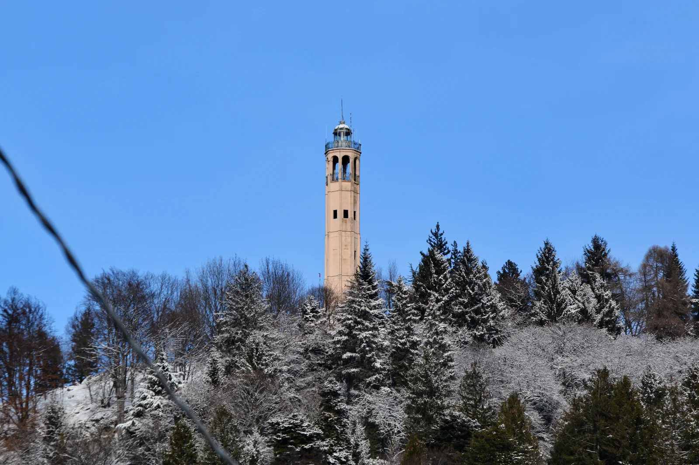

Galtür en diciembre: la opción tranquila del Paznaun a precio de temporada baja
Galtür está en el extremo tranquilo del valle del Paznaun, con su remonte más bajo a 1628 m. Un 15 de diciembre típico, nuestros 46 inviernos de histórico dan 55 cm a media montaña, y en temporada baja (hasta el 18 de diciembre) el forfait oficial de día cuesta 55,50 EUR.
Consulta la previsión de nieve en tiempo real de Galtür en la app SnowScopeEspesor de nieve, alertas de nieve polvo y mapa 3D, gratis.Lo que se piensa de diciembre aquí
Muchos ven Galtür como el vecino pequeño y dormido del valle, majo para familias, no para nieve seria. Para diciembre, las cifras dicen lo contrario: la base está tan alta como en Obertauern y la nieve es algo más profunda. La semana del 15 al 21 de diciembre, el 93 % de nuestros inviernos tenía 30 cm o más a media montaña (1961 m) y el 98 % en la cima (2295 m).


Lo que muestran de verdad 46 inviernos
Un 15 de diciembre típico tiene 40 cm en la base, 55 cm a media montaña y 73 cm en la cima. En Navidad, la media montaña tenía 30 cm en el 96 % de los inviernos y 60 cm o más en el 67 %. En ninguno de nuestros inviernos la base estaba pelada el 15 de diciembre.
A principios de diciembre la base es el punto débil: el primer día habitual con 30 cm allí es el 28 de noviembre, y solo el 54 % de los inviernos tenía tanto del 1 al 7 de diciembre. La tendencia es suave: a media montaña la media de diciembre pasó de 55 cm en los primeros 15 inviernos a 50 cm en los últimos 15.
La parte barata
Según la tarifa oficial, la temporada de Galtür empieza el 4 de diciembre de 2026. La temporada baja dura hasta el 18 de diciembre, con el día adulto a 55,50 EUR y el forfait de 6 días a 258 EUR. Desde el 19 de diciembre: 58,50 EUR y 286,50 EUR.
Son de los precios más bajos de una estación tirolesa de altura en esta serie, y la nieve no es peor por ello.
Dónde encaja Obertauern
Obertauern, en Salzburgo, es la comparación obvia: la misma base a 1628 m, una estación más grande (87 km de pistas cartografiadas frente a 27 km) y algo menos de nieve en diciembre, con 43 cm a media montaña un 15 de diciembre típico y el 80 % de inviernos con 30 cm la semana del 15 al 21 de diciembre. Su forfait de 6 días antes de Navidad cuesta 331 EUR, más que los 258 EUR de Galtür.
Obertauern por tamaño y por esquiar desde la puerta. Galtür por una semana más tranquila y barata, con probabilidades de nieve algo mejores en diciembre.
La letra pequeña
Galtür es pequeño: 9 remontes y 27 km de pistas cartografiadas. Los buenos esquiadores lo conocerán en dos días y quizá quieran un día en otra estación del valle. La carretera al final de un valle largo puede cerrarse por riesgo de aludes tras grandes temporales: deja un día de margen.
Consejos para esquiadores
- Reserva una semana entre el 4 y el 18 de diciembre para el precio de temporada baja (258 EUR por 6 días).
- Elige la segunda semana de diciembre o después: la base solo llega a 30 cm de media hacia finales de noviembre.
- Deja un día de margen: la carretera del Paznaun puede cerrarse tras fuertes nevadas.
- Lee cada mañana el boletín de aludes del Tirol (avalanche.report) antes de salir de pista.
Más mapas (sitios externos)
Referencias y créditos
- Galtür: official lift-pass prices (2026-27), checked 13 November 2026 www.galtuer.com/en/winter/operating-times-prices/skipass-prices-silvapark
- Obertauern: official lift-pass prices (2026-27), checked 13 November 2026 www.ski-obertauern.at/en/ski-pass/ski-pass-prices
Sobre estas cifras
Cifras de nieve: histórico de nieve de SnowScope, 46 inviernos pasados (1980-81 a 2025-26) a las alturas de la estación, corregido por altitud (una estimación para una zona, no partes de la estación); «buena nieve» = 30 cm o más en el suelo de media en la semana. Mapa: nuestro espesor habitual el 15 de diciembre repartido sobre el relieve según la altura. Pistas y remontes: cartografía OpenSkiMap. Forfaits: tarifas oficiales de las estaciones, comprobadas el 13 de noviembre de 2026; los precios pueden cambiar.
Boletines oficiales de aludes: Lawinenwarndienst Vorarlberg
Citar este informe
Para investigación, docencia o prensa: cifras y gráficos reutilizables libremente bajo CC BY 4.0 con esta cita.
SnowScope (2026), Galtür en diciembre: la opción tranquila del Paznaun a precio de temporada baja, https://snowscope.app/blog/es/2026/11/galtuer-december-skiing-quiet-paznaun-budget.html, consultado el 2026-11-14
SnowScope (Atlas Labs). (2026, November 14). Galtür en diciembre: la opción tranquila del Paznaun a precio de temporada baja. SnowScope snow reports. https://snowscope.app/blog/es/2026/11/galtuer-december-skiing-quiet-paznaun-budget.html
BibTeX
@misc{snowscope2026galtuerdecemberskiingqui,
author = {{SnowScope (Atlas Labs)}},
title = {Galtür en diciembre: la opción tranquila del Paznaun a precio de temporada baja},
year = {2026},
month = nov,
howpublished = {\url{https://snowscope.app/blog/es/2026/11/galtuer-december-skiing-quiet-paznaun-budget.html}},
note = {Published 2026-11-14 13:29 UTC; accessed 2026-11-14}
}· CC BY 4.0 · Métodos, datos y herramientas →
Galtür: nieve y temperatura según la altura, este invierno vs el pasado (herramientas) →
Sigue Galtür
Gratis: un aviso cuando llega la nieve y la previsión cada mañana.
Más partes de nieve

Un plan barato de 3 días en el lago de Como en diciembre con precios reales 2026-27: trenes, barcos, funicular y esquí en Piani di Bobbio o Madesimo, lo que ahorras frente a Cortina y la probabilidad de nieve en Navidad.

En diciembre, la nieve depende sobre todo de la altura. 46 inviernos pasados en 676 estaciones de los Alpes muestran cuánta nieve esperar el 1, el 15 y el 22 de diciembre, desde menos de 1200 m hasta más de 2400 m.